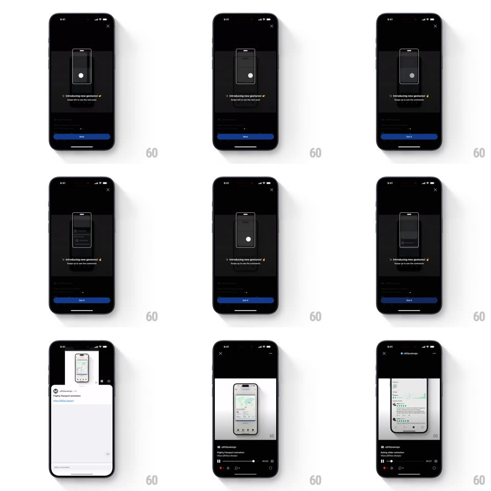

Media
Frame-by-frame

Rebuild this interaction 1:1: Reddit's gestures tooltip - a dark coaching overlay walks through the new swipe gestures with an animated phone illustration and a looping touch dot, stepping from "Swipe left to see the next post" to "Swipe up to see the comments" before revealing the live feed.

Rebuild this interaction 1:1: Reddit's gestures tooltip - a dark coaching overlay walks through the new swipe gestures with an animated phone illustration and a looping touch dot, stepping from "Swipe left to see the next post" to "Swipe up to see the comments" before revealing the live feed. ## Integration Integration: stack-agnostic spec - springs given as stiffness/damping, timed motions as duration + curve; map every value to your framework and animation library of choice. ## Scene Dark overlay on the dimmed feed: X close top-left, phone-outline illustration center, "Introducing new gestures!" headline with a sparkle emoji and a one-line caption, page dot, blue pill button (Next, then Got it). The final frame is the real feed - a post with a playing video and the comments composer at the bottom. ## Motion spec Pattern: tooltip sequence with looping gesture demos. - The overlay fades in over the feed (250ms). - The demo loop: the white touch dot presses (scale pulse 150ms), then drags - left across the phone outline while the mini post inside slides with it (900ms), rests 700ms, repeats; on the swipe-up step the dot pulls up and a mini comments sheet rises inside the illustration. - Caption text crossfades with a 12px rise per step (200ms); the blue button's label flips Next -> Got it on the final step. - Got it dismisses: overlay fades + scales 0.98 (220ms) straight onto the live feed, where the first real swipe uses the demonstrated gesture. ## Calibration - One gesture per step, looping - the user should be able to mimic it while watching. - The illustration is dimmer than the caption - text carries the lesson. ## Reduced motion Static illustration per step; crossfade between steps. ## Don't miss - The dot lingers as a small ripple at the end of each drag before the loop restarts. - The final Got it lands on the actual gesture surface - no intermediate home screen.